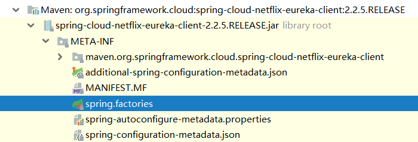
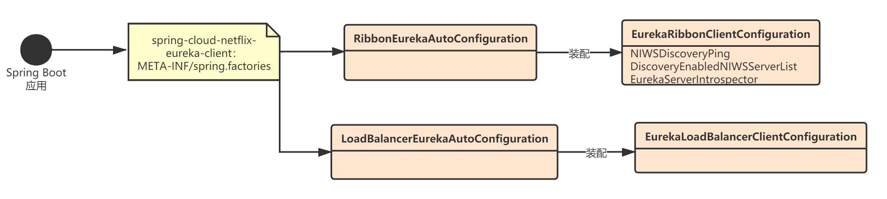

本章，我将讲解与Eureka整合使用时，Spring Cloud Netflix Ribbon的初始化流程。掌握了Spring Cloud Netflix Ribbon的客户端配置的底层原理及其初始化流程，我们再学习Eureka的整合流程其实就很轻松了。读者可以先自己思考下，如果要与Eureka整合，需要对Ribbon做哪些改造？
其实核心就是一点：如何在Spring Boot应用启动时，创建与Eureka功能相关的Ribbon客户端？
我们已经知道，Spring Cloud会为我们创建一个RibbonLoadBalancerClient对象，作为默认的Ribbon客户端实现类，与此同时会根据RibbonClientConfiguration创建很多默认的Ribbon核心组件，并与RibbonLoadBalancerClient绑定。
所以，当Ribbon与Eureka结合使用时，Spring Cloud肯定会创建与Eureka功能相关的Ribbon组件。
当我们在项目中引入Spring Cloud Netflix Eureka相关的jar依赖（spring-cloud-netflix-eureka-client）后，应用启动时就会触发Eureka的自动装配：

org.springframework.boot.autoconfigure.EnableAutoConfiguration=\
org.springframework.cloud.netflix.eureka.config.EurekaClientConfigServerAutoConfiguration,\
org.springframework.cloud.netflix.eureka.config.DiscoveryClientOptionalArgsConfiguration,\
org.springframework.cloud.netflix.eureka.EurekaClientAutoConfiguration,\
org.springframework.cloud.netflix.ribbon.eureka.RibbonEurekaAutoConfiguration,\
org.springframework.cloud.netflix.eureka.EurekaDiscoveryClientConfiguration,\
org.springframework.cloud.netflix.eureka.reactive.EurekaReactiveDiscoveryClientConfiguration,\
org.springframework.cloud.netflix.eureka.loadbalancer.LoadBalancerEurekaAutoConfiguration
org.springframework.cloud.bootstrap.BootstrapConfiguration=\
org.springframework.cloud.netflix.eureka.config.EurekaConfigServerBootstrapConfiguration
上述与Ribbon相关的自动装配类中，最重要的就是RibbonEurekaAutoConfiguration和LoadBalancerEurekaAutoConfiguration。
RibbonEurekaAutoConfiguration是Eureka和Ribbon结合使用的”胶水“：
@Configuration(proxyBeanMethods = false)
@EnableConfigurationProperties
@ConditionalOnRibbonAndEurekaEnabled
@AutoConfigureAfter(RibbonAutoConfiguration.class)
@RibbonClients(defaultConfiguration = EurekaRibbonClientConfiguration.class)
public class RibbonEurekaAutoConfiguration {
}
RibbonEurekaAutoConfiguration的核心就是@RibbonClients注解，它会指定全局的Ribbon客户端配置类EurekaRibbonClientConfiguration，Spring Cloud会利用这个配置类创建一些自定义的Ribbon核心组件，并覆盖掉RibbonAutoConfiguration中的默认配置。
EurekaRibbonClientConfiguration就是自定义了一些Ribbon组件，这些组件可以将Ribbon与Eureka整合起来：
@Configuration(proxyBeanMethods = false)
public class EurekaRibbonClientConfiguration {
@Value("${ribbon.eureka.approximateZoneFromHostname:false}")
private boolean approximateZoneFromHostname = false;
@RibbonClientName
private String serviceId = "client";
@Autowired(required = false)
private EurekaClientConfig clientConfig;
@Autowired(required = false)
private EurekaInstanceConfig eurekaConfig;
@Autowired
private PropertiesFactory propertiesFactory;
public EurekaRibbonClientConfiguration() {
}
public EurekaRibbonClientConfiguration(EurekaClientConfig clientConfig,
String serviceId, EurekaInstanceConfig eurekaConfig,
boolean approximateZoneFromHostname) {
this.clientConfig = clientConfig;
this.serviceId = serviceId;
this.eurekaConfig = eurekaConfig;
this.approximateZoneFromHostname = approximateZoneFromHostname;
}
@Bean
@ConditionalOnMissingBean
public IPing ribbonPing(IClientConfig config) {
if (this.propertiesFactory.isSet(IPing.class, serviceId)) {
return this.propertiesFactory.get(IPing.class, config, serviceId);
}
// NIWSDiscoveryPing会覆盖掉默认的Ribbon客户端配置——ZoneAvoidanceRule
NIWSDiscoveryPing ping = new NIWSDiscoveryPing();
ping.initWithNiwsConfig(config);
return ping;
}
@Bean
@ConditionalOnMissingBean
public ServerList<?> ribbonServerList(IClientConfig config,
Provider<EurekaClient> eurekaClientProvider) {
if (this.propertiesFactory.isSet(ServerList.class, serviceId)) {
return this.propertiesFactory.get(ServerList.class, config, serviceId);
}
// DiscoveryEnabledNIWSServerList会覆盖掉默认的Ribbon客户端配置——ConfigurationBasedServerList
DiscoveryEnabledNIWSServerList discoveryServerList = new DiscoveryEnabledNIWSServerList(
config, eurekaClientProvider);
DomainExtractingServerList serverList = new DomainExtractingServerList(
discoveryServerList, config, this.approximateZoneFromHostname);
return serverList;
}
@Bean
public ServerIntrospector serverIntrospector() {
// 这里会覆盖掉默认的Ribbon客户端配置——ConfigurationBasedServerList
return new EurekaServerIntrospector();
}
@PostConstruct
public void preprocess() {
String zone = ConfigurationManager.getDeploymentContext()
.getValue(ContextKey.zone);
if (this.clientConfig != null && StringUtils.isEmpty(zone)) {
if (this.approximateZoneFromHostname && this.eurekaConfig != null) {
String approxZone = ZoneUtils
.extractApproximateZone(this.eurekaConfig.getHostName(false));
log.debug("Setting Zone To " + approxZone);
ConfigurationManager.getDeploymentContext().setValue(ContextKey.zone, approxZone);
}
else {
String availabilityZone = this.eurekaConfig == null ? null
: this.eurekaConfig.getMetadataMap().get("zone");
if (availabilityZone == null) {
String[] zones = this.clientConfig
.getAvailabilityZones(this.clientConfig.getRegion());
// Pick the first one from the regions we want to connect to
availabilityZone = zones != null && zones.length > 0 ? zones[0] : null;
}
if (availabilityZone != null) {
ConfigurationManager.getDeploymentContext().setValue(ContextKey.zone,
availabilityZone);
}
}
}
RibbonUtils.initializeRibbonDefaults(serviceId);
}
}
我们再来看下LoadBalancerEurekaAutoConfiguration，它是负责组装Spring Cloud通用的负载均衡组件：
@Configuration(proxyBeanMethods = false)
@EnableConfigurationProperties
@ConditionalOnClass(LoadBalancerClientConfigurationRegistrar.class)
@LoadBalancerClients(defaultConfiguration = EurekaLoadBalancerClientConfiguration.class)
@ConditionalOnProperty(name = "eureka.client.enabled", matchIfMissing = true)
public class LoadBalancerEurekaAutoConfiguration {
public static final String LOADBALANCER_ZONE = "spring.cloud.loadbalancer.zone";
@Bean
@ConditionalOnMissingBean
EurekaLoadBalancerProperties eurekaLoadBalancerProperties() {
return new EurekaLoadBalancerProperties();
}
@Bean
@ConditionalOnMissingBean
LoadBalancerZoneConfig zoneConfig(Environment environment) {
return new LoadBalancerZoneConfig(environment.getProperty(LOADBALANCER_ZONE));
}
}
LoadBalancerEurekaAutoConfiguration的核心是下面这个注解，它声明了一个全局的Ribbon客户端配置类EurekaLoadBalancerClientConfiguration：
@LoadBalancerClients(defaultConfiguration = EurekaLoadBalancerClientConfiguration.class)
那这个配置类是什么时候注入到Spring IoC容器中的呢？我们看下LoadBalancerClients注解：
@Configuration(proxyBeanMethods = false)
@Retention(RetentionPolicy.RUNTIME)
@Target({ ElementType.TYPE })
@Documented
@Import(LoadBalancerClientConfigurationRegistrar.class)
public @interface LoadBalancerClients {
LoadBalancerClient[] value() default {};
Class<?>[] defaultConfiguration() default {};
}
通过注解我们可以看到，在Spring Boot应用启动时，会触发LoadBalancerClientConfigurationRegistrar.registerBeanDefinitions()方法的执行，此时会将EurekaLoadBalancerClientConfiguration这个默认配置类注入容器。这个思路和@RibbonClients完全相同，只不过不是特定针对Ribbon这个负载均衡组件而已，Spring Cloud把它通用化了：
public class LoadBalancerClientConfigurationRegistrar implements ImportBeanDefinitionRegistrar {
private static void registerClientConfiguration(BeanDefinitionRegistry registry,
Object name, Object configuration) {
BeanDefinitionBuilder builder = BeanDefinitionBuilder
.genericBeanDefinition(LoadBalancerClientSpecification.class);
builder.addConstructorArgValue(name);
builder.addConstructorArgValue(configuration);
registry.registerBeanDefinition(name + ".LoadBalancerClientSpecification",
builder.getBeanDefinition());
}
@Override
public void registerBeanDefinitions(AnnotationMetadata metadata, BeanDefinitionRegistry registry) {
Map<String, Object> attrs = metadata
.getAnnotationAttributes(LoadBalancerClients.class.getName(), true);
if (attrs != null && attrs.containsKey("value")) {
AnnotationAttributes[] clients = (AnnotationAttributes[]) attrs.get("value");
for (AnnotationAttributes client : clients) {
registerClientConfiguration(registry, getClientName(client),
client.get("configuration"));
}
}
// 将默认配置类注入到Spring容器
if (attrs != null && attrs.containsKey("defaultConfiguration")) {
String name;
if (metadata.hasEnclosingClass()) {
name = "default." + metadata.getEnclosingClassName();
}
else {
name = "default." + metadata.getClassName();
}
registerClientConfiguration(registry, name,
attrs.get("defaultConfiguration"));
}
Map<String, Object> client = metadata
.getAnnotationAttributes(LoadBalancerClient.class.getName(), true);
String name = getClientName(client);
if (name != null) {
registerClientConfiguration(registry, name, client.get("configuration"));
}
}
}
EurekaLoadBalancerClientConfiguration其实就是定义了一些与Eureka相关的负载均衡核心组件的初始化：
@Configuration
@ConditionalOnBean({ LoadBalancerZoneConfig.class, EurekaLoadBalancerProperties.class })
public class EurekaLoadBalancerClientConfiguration {
private final EurekaClientConfig clientConfig;
private final EurekaInstanceConfig eurekaConfig;
private final LoadBalancerZoneConfig zoneConfig;
private final EurekaLoadBalancerProperties eurekaLoadBalancerProperties;
public EurekaLoadBalancerClientConfiguration(
@Autowired(required = false) EurekaClientConfig clientConfig,
@Autowired(required = false) EurekaInstanceConfig eurekaInstanceConfig,
LoadBalancerZoneConfig zoneConfig,
EurekaLoadBalancerProperties eurekaLoadBalancerProperties) {
this.clientConfig = clientConfig;
this.eurekaConfig = eurekaInstanceConfig;
this.zoneConfig = zoneConfig;
this.eurekaLoadBalancerProperties = eurekaLoadBalancerProperties;
}
@PostConstruct
public void postprocess() {
if (!StringUtils.isEmpty(zoneConfig.getZone())) {
return;
}
String zone = getZoneFromEureka();
if (!StringUtils.isEmpty(zone)) {
if (LOG.isDebugEnabled()) {
LOG.debug("Setting the value of '" + LOADBALANCER_ZONE + "' to " + zone);
}
zoneConfig.setZone(zone);
}
}
private String getZoneFromEureka() {
String zone;
boolean approximateZoneFromHostname = eurekaLoadBalancerProperties
.isApproximateZoneFromHostname();
if (approximateZoneFromHostname && eurekaConfig != null) {
return ZoneUtils.extractApproximateZone(this.eurekaConfig.getHostName(false));
}
else {
zone = eurekaConfig == null ? null
: eurekaConfig.getMetadataMap().get("zone");
if (StringUtils.isEmpty(zone)) {
String[] zones = clientConfig
.getAvailabilityZones(clientConfig.getRegion());
// Pick the first one from the regions we want to connect to
zone = zones != null && zones.length > 0 ? zones[0] : null;
}
return zone;
}
}
}
本章，我主要讲解了与Eureka整合使用时，Spring Cloud Netflix Ribbon的初始化流程，整体流程还是比较清晰的，就是初始化并注入了一些与Eureka相关的Ribbon核心组件，整个流程我用下面这张图表示：
